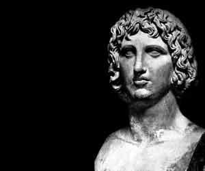
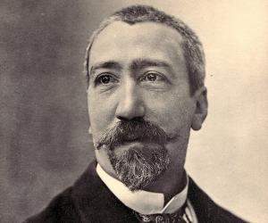

Ancient literature with biographies and quotes from well-known authors.
Virgil - Aeneid :

Publius Vergilius Maro, who is referred to as Virgil among English speaking people, was a poet who lived in ancient Rome between 70 BC and 19 BC, during the reign of King Augustus. Virgil is regarded as one of the greatest poets in the Latin language to have ever lived and his poems are still counted among the classics in the language. Virgil is the author of the Latin epic ‘Aeneid’, which is considered among the greatest epics in the Latin language and in addition to that, he penned the Georgics and Eclogues, which are also considered to be major works. Virgil is counted among the greatest poets to have ever emerged from the Roman Empire and rightly so, considering the body of work that he had produced during his career. Virgil’s body of work is not only considered to be the among the finest in Ancient Rome but his work also went on to influence poets who came after him and in fact, Dante’s Divine Comedy was heavily influenced by his work.
Here are some of the best quotes by Virgil.
Good reading !
A selected quote : "Love conquers all things, so we too shall yield to love."
My link Famous PeopleDante Alighieri - Divina commedia :
Duarante degli Alighieri, popularly known as Dante, was an Italian poet who was active during the late 13th century and early 14th century. Dante is regarded as perhaps the greatest poet to have existed in Italy and his works are still widely read in Italy. He is credited with penning the ‘Divine Comedy’ which is regarded as perhaps the most important literary work in Italian that has ever been composed. As a matter of fact; ‘Divine Comedy’ has been translated into numerous languages and is counted among the gems of world literature. Dante is possibly the biggest figure in the history of the Italian language since it was he who first gave shape to the language through his work at a time when Latin was the dominant language in Europe. Great Italian writers like Boccaccio and Petrarch were hugely inspired by his work and his influence is clearly visible in the literary works that they produced in their lifetimes. Dante had also been the most visible member of the Dolce Stil Novo literary movement in 13th century Italy which revelled in literature themed on love. Here are some of the select quotes from one of the finest minds from the later middle ages who shaped the future of a language.
A chosen quote : "The hottest places in hell are reserved for those who, in times of great moral crisis, maintain their neutrality."
My link Famous PeopleJohn Milton - Lost paradise :

John Milton was a poet, civil servant and a highly regarded intellectual from England, who lived in the 17th century and is credited for penning one of the most famous epics in English literature. Other than English, Milton was well versed in Latin and other European languages. He is without doubt one of the greatest English poets and his work reflected a deep sense of commitment to the causes of freedom of speech as well as self-expression, at a time when such things were not at the top of the mind of most intellectuals. Other than being a most influential poet, Milton was also a civil servant who worked under the ‘Commonwealth of England’. Milton’s most famous work, which is still studied at universities and schools all over the world, is the epic ‘Paradise Lost’ written in 1667 and will surely remain immortal in the annals of literature. Milton’s other famous work is the book ‘Areopagitica’ written in 1644 that deal with subjects like self-expression and freedom of speech. Needless to say, he was ahead of his time in this regard. His life and work also produced a veritable feast of quotes and here are some of the most famous ones that will certainly go down in history as some of his best.
A chosen quote : "Be strong, live happy and love, but first of all Him whom to love is to obey, and keep His great command !"
My link Famous PeopleAnatole France - Various quotes :

Anatole France was an illustrious French novelist, poet and journalist who was also been one of the best-selling writers of his times. He is referred to as the ideal French Man of Letters who was a pioneer in the genre of irony and scepticism. In 1921, he was awarded the ‘Noble Prize in Literature’. His father was a bookseller and Anatole cultivated love for books from a very young age as he was mostly surrounded with books. Besides writing poems and novels, Anatole expressed his thoughts, opinions and viewpoints on subjects close to his heart through memoirs, plays and social criticism. However, he has been considered ‘vulgar’ by some critics for his dubiousness and cynicism. Go through the sayings and quotes by Anatole France which will give you a glimpse of his prolific writings and thoughts. Presenting some famous quotes and thoughts by Anatole France on education, animals, fashion, coverage, poverty, naive, enthusiasm, conversations, changes, life and more.
A selected quote : "All changes, even the most longed for, have their melancholy; for what we leave behind us is a part of ourselves; we must die to one life before we can enter another."
My link Famous People